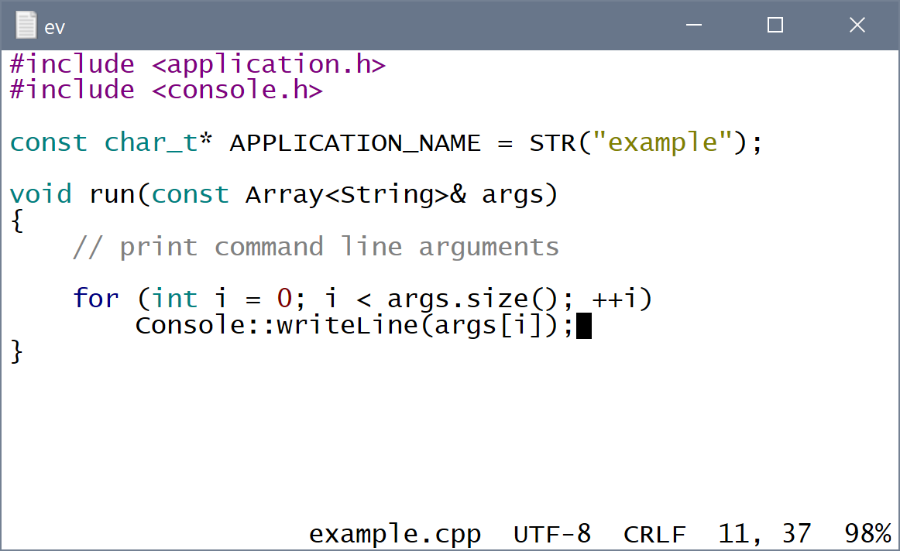

ev text editor
ev is a simple cross-platform text editor written in C++ with minimal dependencies. The executable is just a few hundred kilobytes in size. The editor works in either GUI or terminal mode on three platforms - Windows, macOS and Linux. The editor has some advanced features like autocomplete and syntax highlighting that makes it possible to use it as a development environment.
If you think that ev stands for "eradicate vi" then you are mistaken :-) I have great respect for that venerable text editor. I personally used vim as my main development environment for several years and I love it passionately!
Download
All executables are 64-bit for Intel architecture
Windows GUI: ev-win.zip
Windows console: ev-win-console.zip
macOS terminal: ev-mac.tar.bz2
Linux terminal: ev-linux.tar.bz2
Supported features
- basic text editing operations, autoindent
- multiple open documents
- open/save documents
- copy/delete/paste
- find/replace, go to line
- block operations - indent, unindent, toggle comment
- switch between recently edited locations
- ability to execute make or custom command to build/run/clean a software project
- Unicode support (can read/write UTF-8 and UTF-16, aware of multibyte characters)
- autocomplete based on words in open documents
- macro recording/playback
- syntax highlighting
Keys
Keyboard commands are designed to work on as many terminals as possible without the need to change ev or terminal settings. To achieve that ev provides alternatives for key combinations that may not be supported by a specific terminal.
| arrows | move cursor |
| alt+left/right | word (identifier) left/right (also ctrl+left/right, ctrl+b/w) |
| alt+up/down | go to previous/next recently edited location (also ctrl+up/down) |
| home/end | start/end of line (also ctrl+h/e) |
| alt+home/end | start/end of file (also ctrl+home/end, alt+h/e) |
| pgup/pgdn | page up/down (also ctrl+p/n) |
| alt+pgup/pgdn | 20 lines up/down (also ctrl+pgup/pgdn, alt+p/n) |
| tab | next autocomplete suggestion, indent line/selection |
| shift+tab | previous autocomplete suggestion, unindent line/selection |
| delete | delete character at cursor position |
| backspace | delete character to the left of cursor position |
| alt+del | delete word at cursor position (also ctrl+del, ctrl+d) |
| alt+backspace | delete word to the left of cursor position (also ctrl+backspace, ctrl+]) |
| ctrl+a | mark selection start |
| ctrl+x | delete line/selection |
| ctrl+k | copy line/selection (also ctrl+c) |
| ctrl+l | paste line/selection (also ctrl+v) |
| ctrl+f | find again |
| ctrl+r | replace and find again |
| ctrl+g | find word at cursor |
| ctrl+^ | switch between recently edited locations |
| ctrl+t | insert tab character (\t) |
| alt+, | go to previous document |
| alt+. | go to next document |
| alt+digit | go to nth document |
| alt+b/w | characters (space separated) left/right |
| alt+d | delete word (space separated) at cursor position |
| alt+] | delete word (space separated) to the left of cursor position |
| alt+' | redraw screen and refresh autocomplete suggestions |
| alt+/ | comment line/selection |
| alt+\ | uncomment line/selection |
| alt+r | toggle macro recording |
| alt+m | play macro |
| alt+a | jump between selection start/end |
| F2 | toggle command line |
| F5 | build project |
| F6 | run project |
| F7 | clean project |
| F8 | save document |
| F9 | save all documents |
| F10 | save all documents and quit |
| ESC | quit editor |
macOS note: By default Mac Terminal app sends weird codes for alt+key combinations. They are not unsupported by ev. You can fix the issue by turning on 'Use Option as Meta key' on the Keyboard tab in the terminal profile settings. To make ev easier to use you can add a few key mappings there:
| Home | \033[1~ |
| Option+Home | \033\033[1~ |
| End | \033[4~ |
| Option+End | \033\033[4~ |
| PgUp | \033[5~ |
| PgDn | \033[6~ |
| Option+Forward Delete | \033\033[3~ |
Commands
Command line is accessible at the bottom of the editor by pressing F2 key. Optional parameters are in square brackets.
s - save current document
sa - save all documents
c - close current document
q - quit editor
qs - save all documents and quit
tw on - turn on trimming of trailing whitespace on save
tw off - turn off trimming of trailing whitespace on save
f[i] search-string - find string
i - ignore case
r[ida] search-string replace-string - replace string
i - ignore case
d - replace all matches in current document
a - replace all matches in all documents
any character can be used as string separator instead of space
g number - go to line number
n filename - new file
o filename - open file
Configuration file
The editor reads a configuration file from two locations if it exists. The first location is the user's personal directory (/home/user or C:\Users\User). The second location is the current directory. Configuration settings from current directory take precedence. That allows you to specify project specific setting like build commands. The configuration file name is .ev.cfg on UNIX and ev.cfg on Windows. The format of the file is setting-name=setting-value, one setting per line.
Supported settings:
| Setting | values | default | description | |
| bright_background | true/false | true | changes color scheme to look nice on terminals with dark or bright background | |
| trim_shitespace | true/false | true | trim trailing whitespace on save | |
| indent_size | number | 4 | number of spaces to indent lines | |
| gui_columns | number | 120 | number of columns in GUI mode | |
| gui_lines | number | 60 | number of lines in GUI mode | |
| gui_font_size | number | 13 | font size in GUI mode | |
| gui_font_name | string | platform specific | font name in GUI mode | |
| build_command | string | make | default build command | |
| run_command | string | make run | default run command | |
| clean_command | string | make clean | default clean command |
Autocomplete
Autocomplete works by scanning for all identifiers in open documents and it lets you complete words as you type by pressing Tab key. The list of autocomplete suggestions can be refreshed by saving documents or by pressing alt+'. Completion works best with at least two starting letters. When you press Tab the current suggestion is inserted into the text but the cursor remains after the last letter typed. If there're letters to the right of the cursor, the inserted word overwrites them.
If you are satisfied with the suggestion, you can type the next character following the word such as space or punctuation. The cursor jumps to the end of the word and that character is inserted, minimizing the number of keystrokes. If you move the cursor instead, the 'jump to end' feature is disabled and the next character will be inserted where the cursor is.
If you are not satisfied with the suggestion, you can press Tab or Shift+Tab to go to the previous/next suggestion or you can type one or more letters until autocomplete gives you the expected result without pressing Tab too many times. You can also press Backspace to erase previous letter and automatically suggest a new word based on the shorter prefix.
Syntax highlighting
Languages for which syntax highlighting is currently supported: C, C++, XML, HTML and UNIX shell scripts. ev by default assumes bright screen background and uses darker colors for syntax highlighting to improve contrast. You can override that with bright_background setting in the configuration file.
Building the project
By default ev executes 'make' on UNIX systems and 'nmake.exe' on Windows. The makefile must contain a default target that builds the project and two targets to run and clean the project. This can be overridden by setting build commands in the configuration file.
License
By downloading and using the ev text editor you agree to the following license terms (stating that author provides no guarantees and assumes no liability):
THIS SOFTWARE IS PROVIDED BY THE COPYRIGHT HOLDERS AND CONTRIBUTORS "AS IS" AND ANY EXPRESS OR IMPLIED WARRANTIES, INCLUDING, BUT NOT LIMITED TO, THE IMPLIED WARRANTIES OF MERCHANTABILITY AND FITNESS FOR A PARTICULAR PURPOSE ARE DISCLAIMED.
IN NO EVENT SHALL COPYRIGHT HOLDER BE LIABLE FOR ANY DIRECT, INDIRECT, INCIDENTAL, SPECIAL, EXEMPLARY, OR CONSEQUENTIAL DAMAGES (INCLUDING, BUT NOT LIMITED TO, PROCUREMENT OF SUBSTITUTE GOODS OR SERVICES; LOSS OF USE, DATA, OR PROFITS; OR BUSINESS INTERRUPTION) HOWEVER CAUSED AND ON ANY THEORY OF LIABILITY, WHETHER IN CONTRACT, STRICT LIABILITY, OR TORT (INCLUDING NEGLIGENCE OR OTHERWISE) ARISING IN ANY WAY OUT OF THE USE OF THIS SOFTWARE, EVEN IF ADVISED OF THE POSSIBILITY OF SUCH DAMAGE.
Developer
ev text editor
Copyright © Andrey Levichev, 2019
email: andrey.levichev@gmail.com